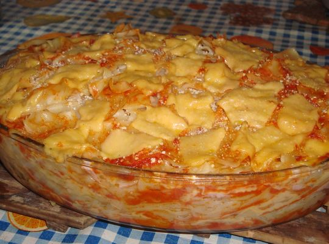

Super Lasanha: Fácil e rápida

Super lasanha pronta
A lasanha é um prato muito amado e superfácil de ser feito. Então experimente essa receita maravilhosa de lasanha de queijo e presunto
Esta receita é super rápida e prática e pode ser feita para um almoço de domingo para receber sua família e amigos.
INGREDIENTES
- 500 g de massa para lasanha
- 500 g de queijo mussarela fatiado
- 500 g de presunto fatiado
- 1 cebola picada
- 1 colher de margarina
- 4 dentes de alho
- 1 xícara de polpa de tomate
- 2 tomates picados
- Coentro a gosto
- Queijo ralado a gosto
- Sal a gosto
PASSO-A-PASSO
- Cozinhe a massa da lasanha com água e sal, escorra e reserve.
- Lave quando for montar a lasanha.
- Doure o alho e a cebola na margarina.
- Adicione os tomates picados misture e coloque o sal.
- Acrescente a polpa do tomate, refogue por alguns minutos e depois coloque o coentro e reserve.
- Em um refratário grande espalhe um pouco do molho e monte colocando a massa da lasanha, molho de tomate, queijo e presunto ate terminar todos os ingredientes, povilhe o queijo ralado e leve ao forno para gratinar.